About the Sheikh
Sheikh Dr. Ahmad ibn Saeed Elladan al-Rashani was a Lebanese scholar, jurist, preacher, Sharia judge and calligrapher. He was born in Khirbet Rouha, in the Rashaya district of the western Bekaa, and served as Mufti of the Rashaya district from 2011 until his death.
His life joined the sciences of Sharia and Quranic exegesis, the Sharia judiciary, university teaching, and work in print, radio and television, with the art of Arabic calligraphy that had accompanied him since his school days. He wrote parts of the Holy Quran by hand and won prizes in international calligraphy competitions.
A Life Through the Years
- 1953
Born in Khirbet Rouha, Rashaya district, Lebanon.
- 1964
Finished primary school at the Maqasid Islamic Charitable School in his village, and studied the Quran and tajwid under Sheikh Hamdi Abu Jaq.
- 1972
Finished secondary school at Azhar Lebanon in Beirut, then travelled to Egypt and joined the School for the Improvement of Calligraphy (Tahsin al-Khutut).
- 1976
Earned his bachelor's degree (licence), returned to Lebanon, and worked at the magazine al-Fikr al-Islami and at Azhar Beirut.
- 1978
Married and settled in Beirut (Zardan), working as a book proofreader for major publishing houses.
- 1981 – 1983
Worked night shifts at the magazine al-Liwa', then devoted himself to writing out the Holy Quran.
- 1984 – 1986
Took study leave in Egypt and returned with a master's degree.
- 1990
Served as principal of Azhar Bekaa, then as imam in the town of Taalabaya and teacher at the National Brotherhood School.
- 1995
Completed his doctoral thesis in Egypt with distinction and first-class honours.
- 1998
Took part in a conference in Jordan, and won a prize for Naskh script at the Fourth International Arabic Calligraphy Competition.
- 2000
Took part in a seminar on women on the Al-Safwa channel and in the Sharjah conference, and visited Canada, where he met Muslim communities.
- 2005
Took part in the Second Exhibition of Arabic Calligraphy and Lettering in Tripoli (Lebanese University).
- 2008
Appointed Sharia judge and president of the Sharia court in Arsal, until 2012.
- 2011
Appointed Mufti of the Rashaya district by the Mufti of the Republic, Sheikh Muhammad Rashid Qabbani (May 2011).
- 2012 – 2018
President of the Rashaya Sharia Court.
- 2013
Attended the International Conference of Latin American Muslims in Brazil, and began his programmes on Future TV (until 2017).
- 2016
Took part in the “Islam and Moderation” conference at Dar al-Fatwa.
- 2018
Passed away on 1 January.
Scholarship & Teaching
Education
- Primary: the Maqasid Islamic Charitable School in his village.
- Secondary: Azhar Lebanon in Beirut (1972).
- Al-Azhar University in Egypt: bachelor's (1976), master's (1986) and doctorate (1995) at the Faculty of Usul al-Din.
- In Egypt he met a number of sheikhs and Quran reciters, among them Sheikh Mustafa Ismail and Sheikh Khalil al-Husari.
University Teaching
He taught at the Faculty of Sharia, the Maqasid Institute, the Faculty of Da'wa, the Imam al-Awza'i College, the Faculty of Sharia in the Bekaa, Azhar Bekaa, Beirut Islamic University and Maqasid University.
Thesis Supervision
He supervised many university theses at the Islamic University of Tripoli and Al-Jinan University in Tripoli, and examined theses at both and at the other Islamic universities where he taught.
Research & Conferences
At the Sharjah conference in 2000 he presented a paper on thematic exegesis. He also took part in a conference in Jordan (1998), the “Islam and Moderation” conference at Dar al-Fatwa (2016), and the International Conference of Latin American Muslims in Brazil (2013).
Participation in Algeria: the Belkaidia Hebria Zawiya
The Sheikh took part in the “Muhammadan Lessons” series organised by the Belkaidia Hebria Zawiya in the town of Sidi Maarouf, east of Oran, Algeria. The series is held every year with scholars from Algeria and the wider Muslim world, including scholars from Lebanon. He gave lectures there year after year.
Judiciary & Ifta
Sharia Judge
Appointed a judge in 2008, he presided over the Sharia court in Arsal from 2008 to 2012, then over the Rashaya Sharia Court from 2012 to 2018.
Mufti of Rashaya
In 2011 the Mufti of the Lebanese Republic, Sheikh Muhammad Rashid Qabbani, issued a decree appointing him Mufti of the Rashaya district, and he carried out that duty until his death. In his hometown he founded the “Al-Burhan” association, which began building a seat for Dar al-Fatwa in the district.
Imam & Preacher
Imam of the town of Taalabaya. At Dar al-Fatwa he wrote articles under the supervision of Mufti Sheikh Hassan Khaled, and ran the platform for thought and fatwas.
His Approach
He was known for calling to moderation and balance, and for stressing that sound Sufism must be taken from respected sheikhs and scholars.
Writing & Media
Editing & Proofreading
He worked at the magazine al-Fikr al-Islami until it ceased publication in 1989, and at al-Liwa' (1981–1983). He proofread books for Dar al-Kutub al-Ilmiyya, Dar al-Ma'rifa, Dar Ihya' al-Turath al-Arabi and Dar al-Nafa'is, among them al-Zamakhshari's al-Kashshaf.
Radio
On Holy Quran Radio he presented the weekly programme “Rulings of the Faith” and the programme “Journeys of Light” (Siyar min al-Nur), which offered poetic portraits from the lives of the Companions over three years.
Television
On Future TV between 2013 and 2017 he presented religious programmes, among them “The Four Imams” and “The Best of Speech”. In 2000 he also took part in a seminar on women on the Al-Safwa channel.
Meeting Communities
He travelled to Canada in 2000 and met Muslim communities in several cities and provinces, and to Brazil in 2013 for the International Conference of Latin American Muslims.
The Art of Arabic Calligraphy
Calligraphy was Sheikh Ahmad Elladan's companion from his youth. His teachers admired it early, and he refined his gift in Beirut and then in Cairo, continuing to write calligraphy alongside his work in scholarship and the judiciary. In his funeral tribute, the Mufti of the Republic described him as a master of art, calligraphy and Arabic ornamentation.
From Student to Calligrapher
- At Azhar Lebanon in Beirut he met Haj Afif al-Tabbara, who admired his handwriting and directed him to Ustadh Kamil al-Baba, one of Lebanon's foremost calligraphers.
- Ustadh Kamil al-Baba advised him to deepen his skill in Egypt.
- In Cairo he joined the School for the Improvement of Calligraphy and studied under Ustadh Sayyid Ibrahim and Ustadh Muhammad Abd al-Qadir.
- Leading calligraphers admired his hand and encouraged him to keep developing his skill.
Writing the Holy Quran
From 1983 he devoted himself to writing out the Holy Quran by hand, on large-format paper, and completed several parts.
Competitions & Exhibitions
- 1998: Won a prize for Naskh script at the Fourth International Arabic Calligraphy Competition.
- 11 – 12 June 2005: Took part in the Second Exhibition of Arabic Calligraphy and Lettering in Tripoli, Lebanese University.
Gallery of His Works
Paintings and works by the Sheikh's own hand.


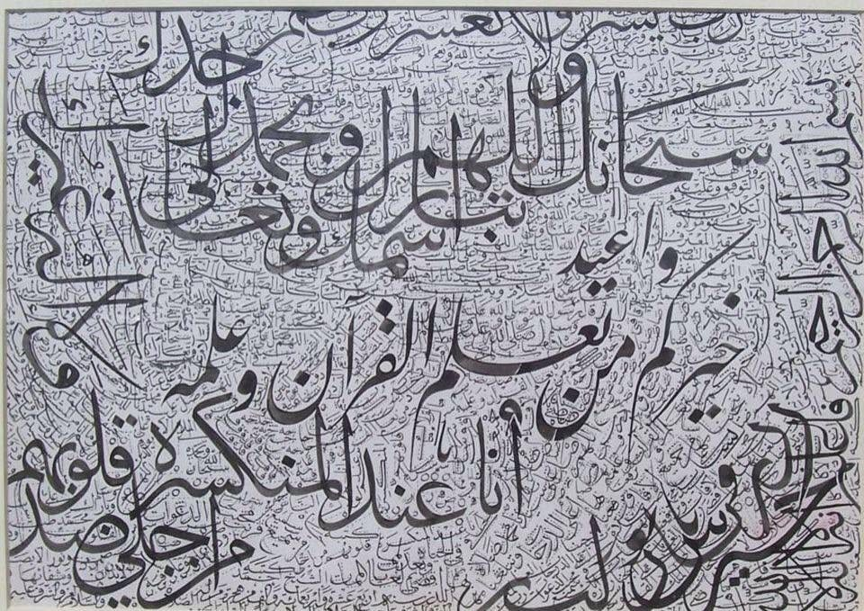


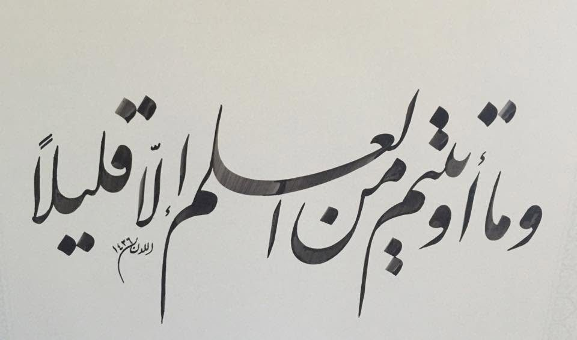


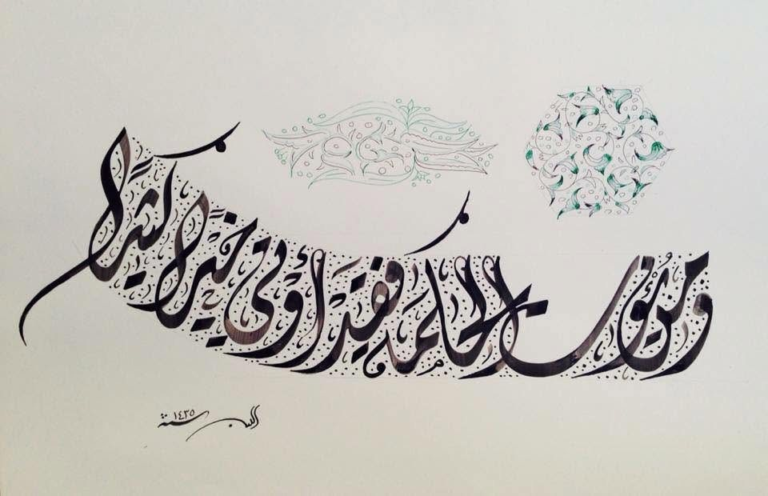
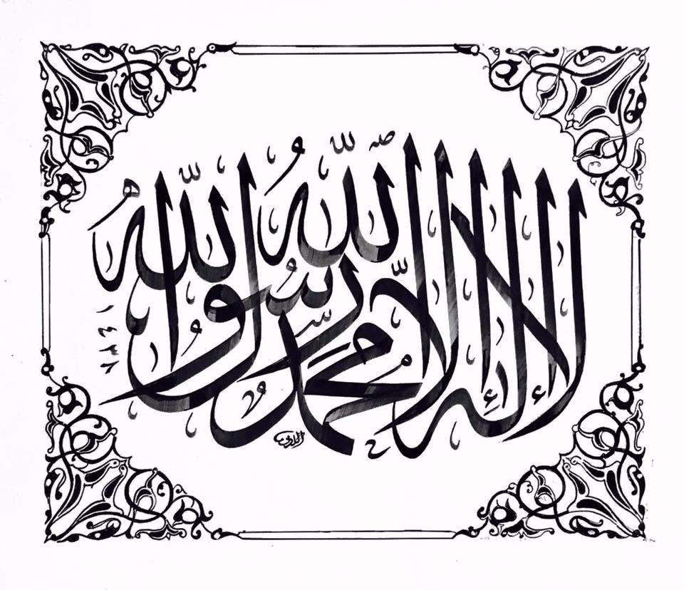

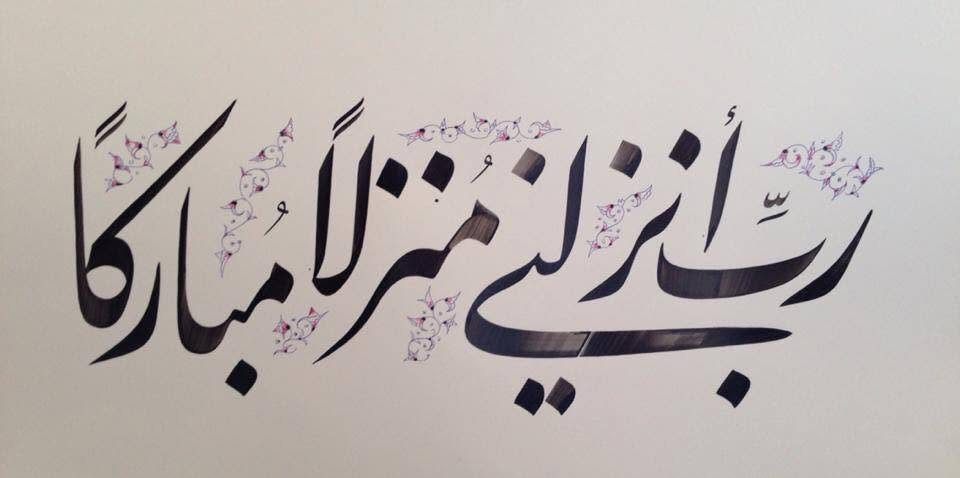
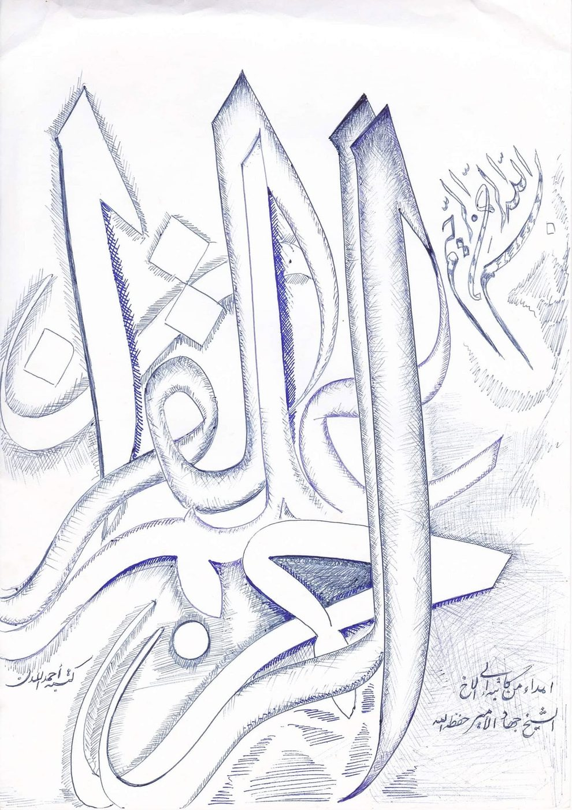


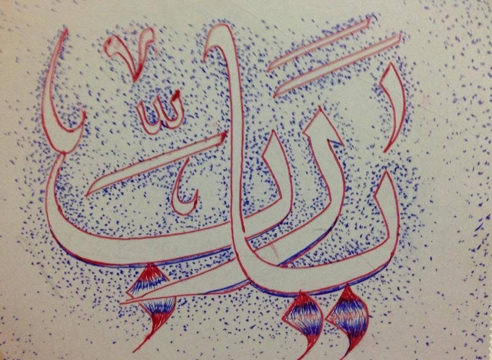

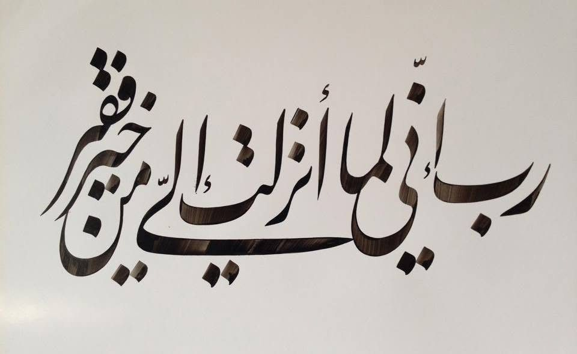


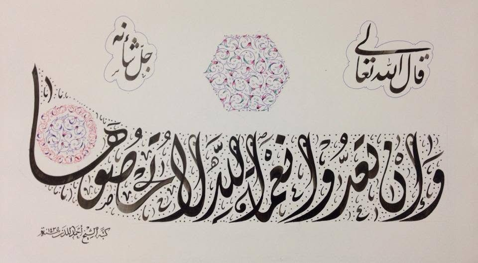


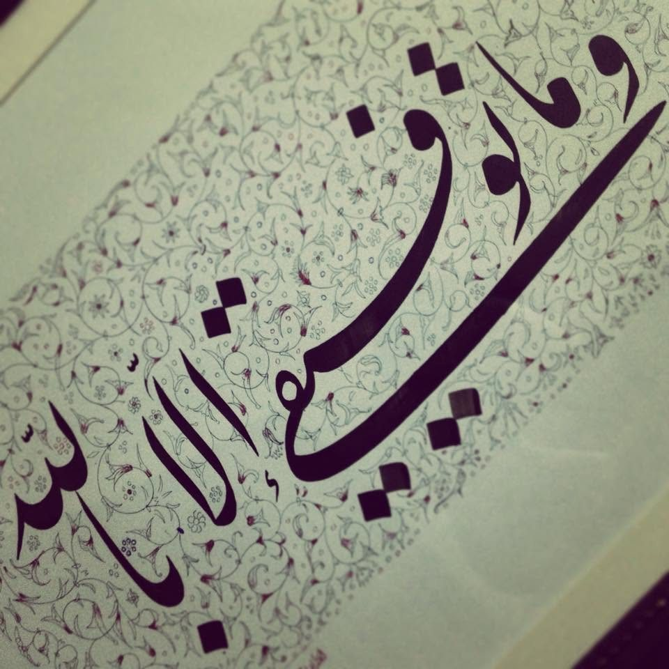
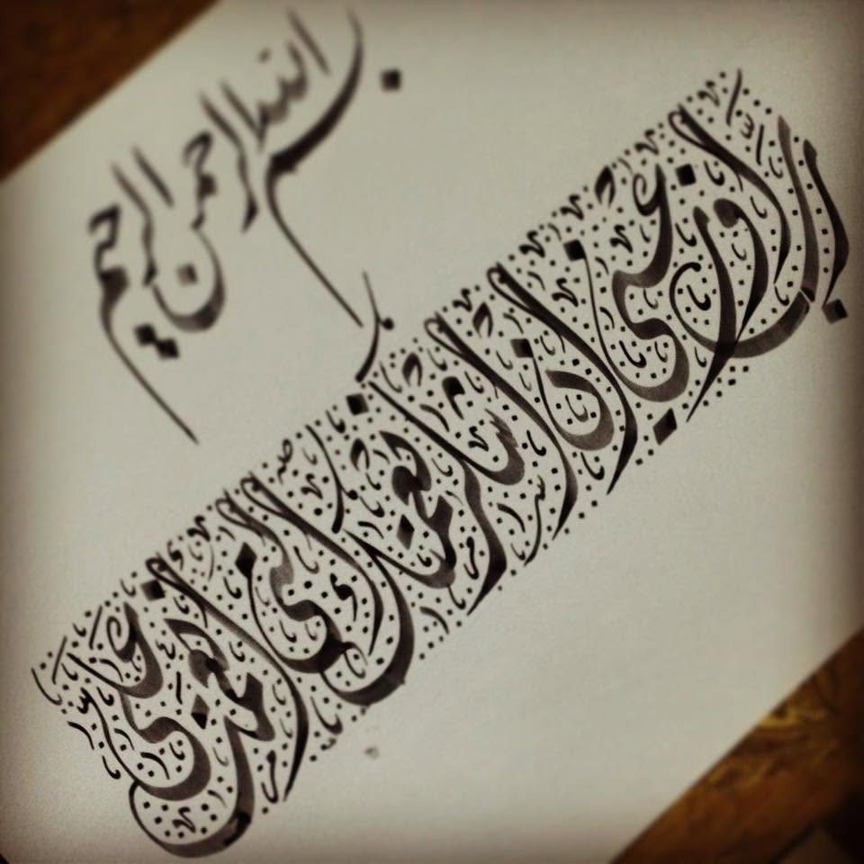

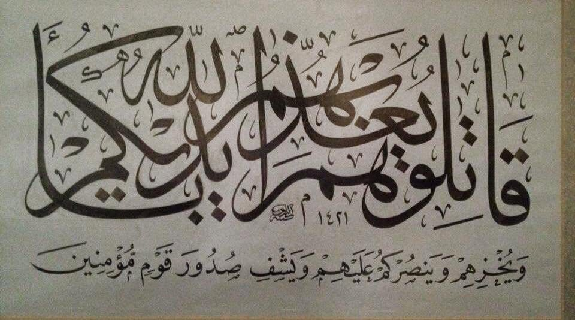
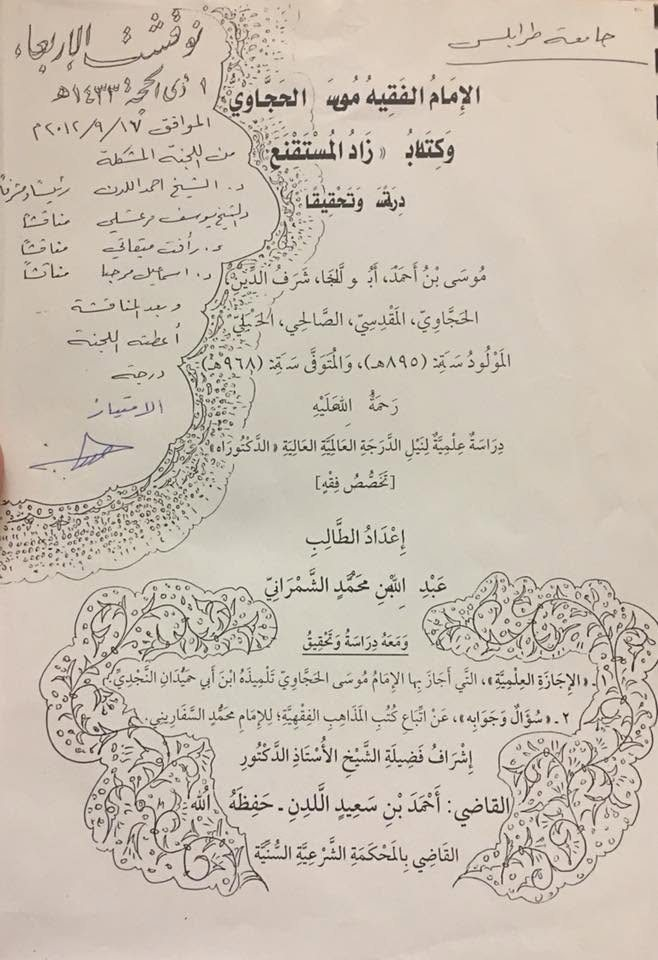
Videos & Links
Clips from the Sheikh's official page, and his lessons and programmes available on YouTube. All of the videos are in Arabic.
Rare photos and stories from the Sheikh's life
A clip from the Sheikh's official Facebook page.
Open the clip on FacebookVerses dedicated to the Sheikh's soul
Words by Dr. Raafat al-Miqati, performed by Ustadh Walid Abu Hayt.
Open on YouTube“The Four Imams”: the Sheikh's episodes
Episodes of the programme “The Four Imams” by broadcaster Abdul Halim Qabbani, with Sheikh Ahmad Elladan as guest, on Imam Ahmad ibn Hanbal, Imam al-Awza'i and the ranks of the mujtahids.
- Episode 21: Imam Ahmad ibn Hanbal, Part 121 min
- Episode 22: Imam Ahmad ibn Hanbal, Part 218 min
- Episode 23: Imam Ahmad ibn Hanbal, Part 319 min
- Episode 24: Imam Ahmad ibn Hanbal, Part 419 min
- Episode 25: Imam Ahmad ibn Hanbal, Part 517 min
- Episode 26: Imam Ahmad ibn Hanbal, Part 618 min
- Episode 27: Imam Ahmad ibn Hanbal, Part 720 min
- Episode 28: Imam Abd al-Rahman ibn Amr al-Awza'i, Part 118 min
- Episode 29: Imam Abd al-Rahman ibn Amr al-Awza'i, Part 220 min
- Episode 30, the final episode: the standing of ijtihad and the ranks of the mujtahids21 min
Khayr al-Kalam, the “Ayat wa Ibar” programme (Future TV)
Episodes of “Khayr al-Kalam” on Future TV, including all 30 “Ayat wa Ibar” episodes from Ramadan 2017.
- خير الكلام - الحلقة الاولى - ايات وعبر 27/05/201748 min
- خير الكلام - الحلقة الثانية - ايات وعبر 28/05/201749 min
- خير الكلام - الحلقة الثالثة - ايات وعبر 29/05/201746 min
- خير الكلام - الحلقة الرابعة - ايات وعبر 30/05/201747 min
- خير الكلام - الحلقة الخامسة - ايات وعبر 31/05/201746 min
- خير الكلام - الحلقة السادسة - ايات وعبر 01/06/201748 min
- خير الكلام - الحلقة السابعة - ايات وعبر 02/06/201750 min
- خير الكلام - الحلقة الثامنة - ايات وعبر 03/06/201747 min
- خير الكلام - الحلقة التاسعة - ايات وعبر 04/06/201749 min
- خير الكلام - الحلقة العاشرة - ايات وعبر 05/06/201749 min
- خير الكلام - الحلقة الحادية عشر - ايات وعبر 06/06/201748 min
- خير الكلام - الحلقة الثانية عشر - ايات وعبر 07/06/201748 min
- خير الكلام - الحلقة الثالثة عشر - ايات وعبر 08/06/201747 min
- خير الكلام - الحلقة الرابعة عشر - ايات وعبر 09/06/201748 min
- خير الكلام - الحلقة الخامسة عشر - ايات وعبر 10/06/201748 min
- خير الكلام - الحلقة السادسة عشر - ايات وعبر 11/06/201751 min
- خير الكلام - الحلقة السادسة عشر - ايات وعبر 12/06/201746 min
- خير الكلام - الحلقة السادسة عشر - ايات وعبر 13/06/201749 min
- خير الكلام - الحلقة السادسة عشر - ايات وعبر 14/06/201747 min
- خير الكلام - الحلقة السادسة عشر - ايات وعبر 15/06/201747 min
- خير الكلام - الحلقة الواحدة والعشرون - ايات وعبر 16/06/201746 min
- خير الكلام - الحلقة الثانية والعشرون - ايات وعبر 17/06/201749 min
- خير الكلام - الحلقة الثالثة والعشرون - ايات وعبر 18/06/201747 min
- خير الكلام - الحلقة الرابعة والعشرون - ايات وعبر 19/06/201745 min
- خير الكلام - الحلقة الخامسة والعشرون - ايات وعبر 20/06/201748 min
- خير الكلام - الحلقة السادسة والعشرون - ايات وعبر 21/06/201747 min
- خير الكلام - الحلقة السابعة والعشرون - ايات وعبر 22/06/201748 min
- خير الكلام - الحلقة الثامنة والعشرون - ايات وعبر 23/06/201745 min
- خير الكلام - الحلقة التاسعة والعشرون - ايات وعبر 24/06/201749 min
- خير الكلام - الحلقة الثلاثون - ايات وعبر 25/06/201740 min
- خير الكلام - الحلقة الثانية عشرة - لماذا أصبح السؤال عند الكثير من الناس محرما؟23 min
Participation in Algeria: the Belkaidia Hebria Zawiya
- 2008 (Ramadan 1429, 3rd Forum, theme “Inspired by the Noble Sunnah”): servitude to God in the Prophetic Sunnah1 hr 20 min
- 2009 (Ramadan 1430, 4th Forum, theme “The Rightly Guided Caliphs”): our master Uthman ibn Affan, the school of modesty1 hr
- 2009: the place of reason in Islam44 min
- 2009: the creed of Ahl al-Sunna wa al-Jama'a32 min
- 2010 (Ramadan 1431, 5th Forum, theme “Knowledge”): Muhammadan Lessons 2010, Part 414 min
- 2011 (Ramadan 1432, 6th Forum): the merit of the Ash'ari masters in preserving and defending the Islamic creed31 min
Lessons, lectures and sermons
- Friday sermon: “Stop them, for they will be questioned” (20 December 2014)25 min
- Exegesis of the verse “I will take you and raise you to Myself”Clip
- Address at the conference of the Association of Muslim Scholars in support of the Syrian revolution17 min
Television, radio and news coverage
- “Some of my fondest memories with my late teacher, Sheikh Dr. Ahmad Elladan, may God have mercy on him”23 min
- Occasions of Revelation: the story of the Cow of the Children of Israel, Part 1. Guest: Sheikh Ahmad Elladan; host: Abdul Halim Qabbani21 min
- Occasions of Revelation: the story of the Cow of the Children of Israel, Part 223 min
- How Lebanon bade farewell to the Mufti of Rashaya, Future TV2 min
Tributes
The Mufti of the Republic, Sheikh Abdul Latif Derian, described him as “the model of the jurist-scholar”, a man of refined letters, art, calligraphy and Arabic ornamentation.
Mufti of Lebanon, Sheikh Abdul Latif Derian From his obituary, 2018Prime Minister Saad Hariri saw in him “a beacon of wisdom and moderation” and a caller to unity, love and shouldering responsibility. He offered condolences to Dar al-Fatwa, of which the Sheikh was a pillar.
Prime Minister Saad Hariri Then Prime MinisterFormer Prime Minister Fouad Siniora said he was “the model of the jurist-scholar and the upright judge”, a memoriser and interpreter of the Holy Quran and the Prophetic biography, and counted him a pillar of piety, knowledge and the call to moderation.
Former Prime Minister Fouad Siniora From his statement of condolenceAt his funeral, the Mufti of Zahle and the Bekaa, Sheikh Khalil al-Mais, spoke of his virtues, his writings and his role in raising generations and spreading moderation and balance.
Mufti of Zahle and the Bekaa, Sheikh Khalil al-Mais Funeral address, 2 January 2018He was also mourned by Lebanon's Dar al-Fatwa, the Higher Islamic Sharia Council, the Higher Council of the Sharia Judiciary, the Sunni Sharia courts, the Faculty of Islamic Sharia, the General Directorate of Islamic Endowments, the Council of Scholars in Lebanon, Dar al-Fatwa in Zahle and the Bekaa, Dar al-Fatwa in Rashaya, and the Maqasid Islamic Philanthropic Association in Beirut.
Passing & Funeral
Sheikh Dr. Ahmad Elladan passed to God's mercy at midday on Monday, 1 January 2018, corresponding to 14 Rabi' al-Thani 1439 AH, in Beirut, after a long illness, at about 64 years of age.
He was laid to rest the next day. The funeral prayer was held at the mosque of his hometown, Khirbet Rouha, led by the Mufti of the Republic, Sheikh Abdul Latif Derian, and he was buried there. At the funeral, Mufti Derian, Mufti al-Mais and the town's imam spoke of his virtues, his writings and his role in raising generations and spreading moderation and balance.
اللهم اغفر له وارحمه، وأكرم نزله، ووسّع مدخله.
O God, forgive him and have mercy on him, honour his arrival, and make his entrance spacious.
Official Page
The Sheikh's official Facebook page holds rare photographs and stories from his life: facebook.com/aalladan